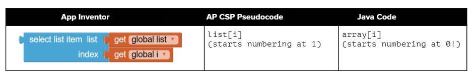

Array Creation and Access
To access the items in an array, we use an indexed array variable.
This is the array name and the index inside square brackets [].
Remember that an index is a number that indicates the position of an item in a list, starting at 0.

Comparing access to App Inventor lists and Java arrays
The source compares App Inventor, AP CSP pseudocode, and Java array access.
An indexed variable like arrayname[index] can be used anywhere a regular variable can be used.
For example, you can assign a new value or get a value from the array.
The first value in an array is stored at index 0.
The index of the last value is the length of the array minus one, since the first index is 0.
Square brackets [] are used to access and modify an element in a 1D array using an index:
The source memory-model video is omitted; the access rule is retained.
fillintheblank:: array-access1Fill in the blank with code to access the cars array.
The semicolon is provided after the blank in the source.
Correct answer:
fillintheblank:: array-access2Fill in the blank with code to access the cars array.
Correct answer:
If you want to keep track of the top 5 highest scores in a game and the names of the people with those scores, you could use two parallel arrays.
One array could keep track of the scores and the other the names.
You have to make sure you keep them in the same order so that the same index can be used to get corresponding names and scores.
activecode:: array-setTry out the following code which has two parallel arrays, highScores and names.
Can you print out Mateo’s score?
Can you change Sofia’s score to 97 using an assignment statement in the code?
Can you change the arrays so that they have 6 elements and add your name and score and print them out?
public class Test1
{
public static void main(String[] args)
{
// declare, create, initialize arrays
int[] highScores = {99, 98, 98, 88, 68};
String[] names = {"Jamal", "Emily", "Destiny", "Mateo", "Sofia"};
// Print corresponding names and scores
System.out.println(names[0] + " has a score of " + highScores[0]);
System.out.println(names[1] + " has a score of " + highScores[1]);
// TODO: Print Mateo's score
// TODO: Change Sofia's score to 97
// TODO: Change arrays to 6 elements and add your name and score
}
}The tests check that:
main output changes from the original two printed linesMateoThe expected Mateo line is:
What happens if you try to access an element that is not there?
Try to access a highScore or name at index 7 in the previous code to see what happens.
The index must be between 0 and length - 1.
Otherwise, it will give an error message called ArrayIndexOutOfBoundsException.
Using an index value outside of 0 through length - 1 will result in an ArrayIndexOutOfBoundsException being thrown.
One powerful feature in the array data abstraction is that we can use variables for the index.
As long as the variable holds an integer, we can use it as an index.
activecode:: imageArrayHere is a fun String array of image filenames.
The code displays an online image using an HTML tag.
This just works in the Active Code window, which interprets HTML.
In other Java IDEs you would need to use Java Swing graphics instead.
public class ImageEx
{
public static void main(String[] args)
{
String[] images =
{
"cow.jpg", "kitten.jpg", "puppy.jpg", "pig.jpg", "reindeer.jpg"
};
ImageEx obj = new ImageEx();
// TODO: Change index to see different images in the array!
// TODO: Can you have it pick out a random image?
int index = 0;
obj.printHTMLimage(images[index]);
}
// This method will just work in Active Code which interprets html
public void printHTMLimage(String filename)
{
String baseURL =
"https://raw.githubusercontent.com/bhoffman0/CSAwesome/master/_sources/Unit6-Arrays/6-1-images/";
System.out.print("<img src=" + baseURL + filename + " width=500px />");
}
}Can you change the index variable’s value so that it prints out the puppy image?
Can you print out the reindeer?
Try all of them.
What indices did you need to use?
Then try using a random number for the index instead.
Remember that (int)(Math.random() * max) will return a number from 0 up to max.
The tests check that:
int index = 0; has been changedMath.random is used to set the indexThe classroom question is: what is the maximum number it can be for this array?
array[index]array[index] on the left sidecars[1] for Volvo and cars[0] for Toyota0 through length - 1Next: Countries Array challenge.